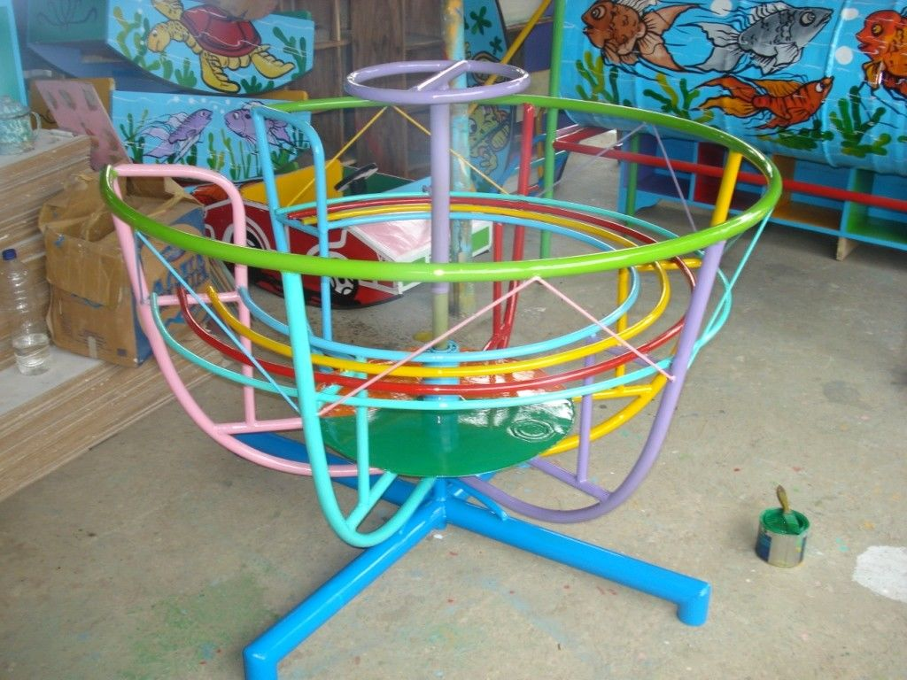

Developer, Hacker, User ? Apaan tuh
Saya cukup yakin sudah banyak orang yang mengetahui ketiga istilah ini, akan tetapi banyak juga orang yang masih bingung kira kira apakah arti dari ketiga istilah ini dan apa yang sebenarnya mereka lakukan ?.
Maka dari itu saya akan menjawab pertanyaan seperti itu dengan menggunakan analogi yang menurut saya cukup sederhana dan menarik.
Analogi
Mungkin banyak sekali artikel yang membahas tentang hal ini, tapi disini saya akan menjelaskan dengan cara yang lebih mudah dipahami.
Jadi mari kita analogikan dengan taman bermain...
Taman bermain tentunya akan banyak dimainkan oleh anak-anak, akan tetapi bukan suatu hal yang aneh juga bagi orang dewasa untuk bermain di taman bermain.
Mari kita implementasikan analogi ini pada ketiga istilah yang ada di judul blog ini.
Developer
Untuk arti dalam bahasanya developer adalah pembuat / pembangun.
Nah, sama halnya dengan arti pada bahasa indonesia nya, memang developer merupakan seseorang yang membuat / membangun sesuatu dalam hal ini merupakan sebuah software / perangkat lunak.
Bila kita analogikan kepada taman bermainnya, maka developer merupakan orang yang membangun taman bermain tersebut.
Pada dasarnya dalam sebuah software development, seorang developer harus memperhatikan keseluruhan hal termasuk salah satu nya adalah user engangement, kalau kita lihat ini sama saja seperti seorang yang ingin membuat taman bermain, pembuatnya haruslah tau permainan apa saja yang lebih disukai oleh anak-anak dan/atau orang dewasa yang pada akhirnya akan membuat taman bermainnya menjadi laku dan sering dikunjungi oleh anak-anak dan/atau orang dewasa.
Begitu juga dengan hal yang sedikit nyentrik, developer biasanya mendapatkan aplikasinya memiliki bug pada saat production stage dalam artian lain terdapat kesalahan pada software yang dibuat saat telah diluncurkan.
Memang sudah keharusan bagi para developer untuk membetulkan bug nya, akan tetapi tidak jarang juga ditemukan beberapa bug yang tidak sengaja malah menjadi fitur dari software tersebut :D.
Sama halnya dengan taman bermain, pada saat pembangunan taman bermain tidak terlaksanakan dengan sempurna maka akan ada saat dimana permainan nya gampang roboh dan sebagainya, nah pada sebagian besar waktu dimana permainannya roboh, maka permainan tersebut harus dibetulkan kembali, contohnya seperti ayunan, perosotan, dsb.
Akan tetapi ada saat dimana mainan yang roboh ini justru bisa juga digunakan untuk keperluan lainnya, tanpa perlu dibetulkan, contohnya pada mainan mangkok putar dibawah ini, jika mainan ini roboh maka tetap saja kita masih bisa menggunakannya untuk dipakai duduk duduk seperti biasa :D.
 sumber: idntimes
User
User atau dalam bahasa indonesia yang artinya pengguna ini merupakan seorang yang menggunakan aplikasi / software yang telah dibuat oleh developer nya.
Dalam analogi ini maka user merupakan seorang anak-anak dan/atau orang dewasa yang bermain pada taman bermain yang telah dibuat oleh pembuatnya (developer).
Memang tidak ada hal lain yang menarik untuk dibahas dibagian user karena pada umumnya semua orang yang bermain di taman bermain akan menggunakan permainannya dengan seharusnya.
Hacker
Banyak orang yang berpikir hacker merupakan orang yang jahat, tetapi pemikiran ini setengah benar setengah salah, karena banyak juga hacker yang bekerja demi kebaikan dan hanya mencari uang uang yang halal dalam artian lain legal.
Kata hacker itu sendiri mengartikan peretas dalam bahasa indonesia, maka dari itu sudah merupakan sebuah pondasi bagi seorang hacker untuk memahami suatu software yang ingin diretasnya sebelum hacker tersebut mampu meretas software nya, teknik ini juga disebut dengan reconnaissance dalam dunia hacking / peretasan.
Jika kita analogikan kedalam taman bermain, maka hacker ini adalah seorang anak-anak yang juga merupakan sebuah user, akan tetapi disaat anak-anak pada umumnya menggunakan permainan pada taman bermain dengan cara yang biasa, anak-anak lain (hacker) menggunakannya dengan cara yang tidak lazim, contohnya disaat ayunan pada umumnya dipakai oleh anak-anak dengan cara duduk lalu mengayunkannya, anak-anak lainnya (hacker) menggunakannya dengan cara mengayunkan ayunannya hingga berputar 360° bahkan lebih.
sumber: geekologie
Dan dengan mengetahui cara kerja ayunannya tersebut lah seorang hacker mampu untuk mengeksploitasi sistemnya misal dalam hal ini merobohkan ayunannya, tapi gamungkin juga anak anak merobohkan ayunan :v.
Last word
Semoga artikel nya mudah dipahami dan menyenangkan, jika memang dirasa bermanfaat silahkan sebarkan kepada yang lainnya agar ilmu nya tidak berhenti disini saja.
Terimakasih kepada Allah SWT dan juga para pembaca disini, semua yang buruk datangnya dari saya dan yang baik hanya datang dari-Nya, mohon maaf bila ada kesalahan 🙏.